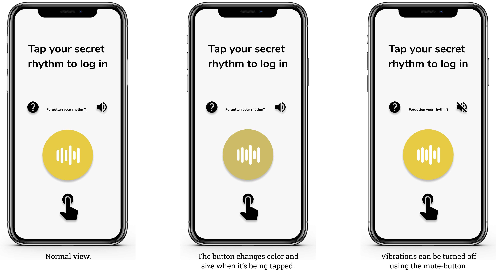
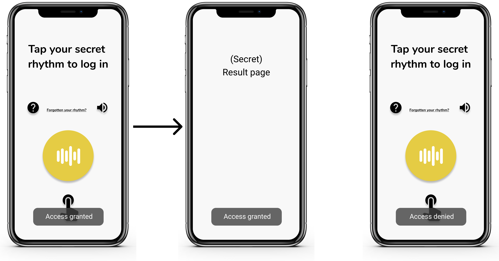
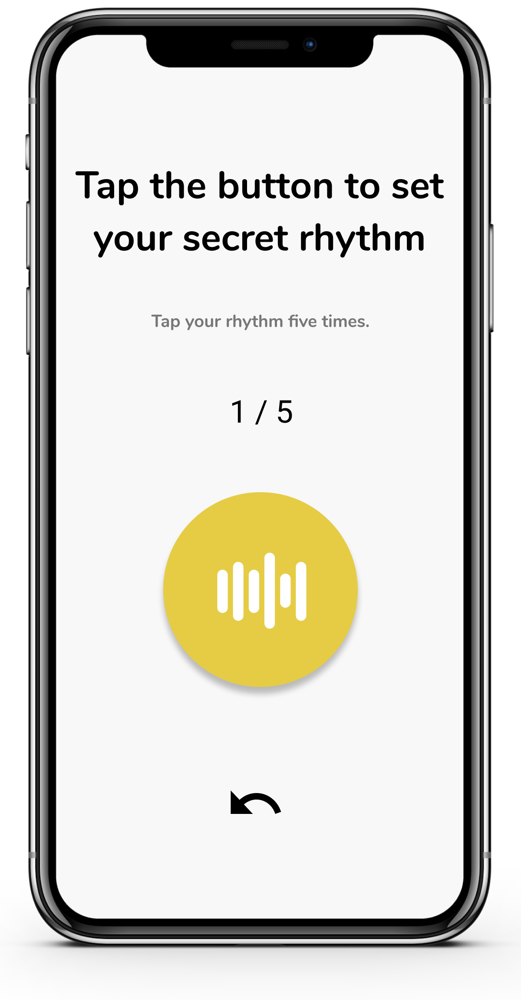
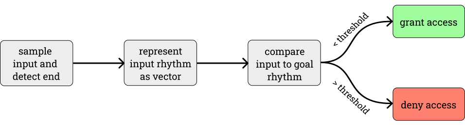
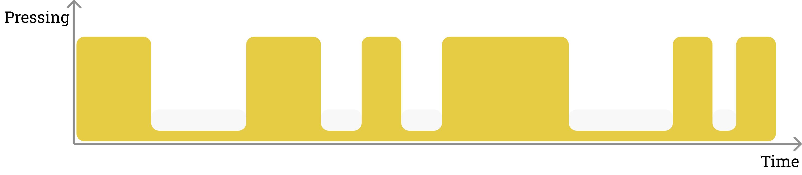

PassBeat Tool
Purpose of PassBeat
The purpose of PassBeat is to test the users' ability to remember rhythm-based authenitcation methods as compared to text-based passwords. Many studies have suggested that rhythms, melodies and music are relatively easy for humans to rememeber, and some studies also suggest that text-based passwords are relatively difficult to remember. Furthermore, the ability to remember the latter decreases as its security increases.
The app will serve as a tool when conducting field studies. The idea is that the app should serve this purpose automatically once downloaded on a user's smartphone, logging any data that is deemed interesting in regard to the research questions.
How to use PassBeat
Logging in
In the login-view the user can tap their rhythm, if properly set up, to enter the app. The button is animated to give slight visual feedback when tapped and haptic feedback will be given unless it has been muted using the icon in the bottom right corner. The level of feedback the user gets is supposed to represent what is generally available.
By pressing the "Forgotten your rhythm?"-text, the user can reset their rhythm if they have forgotten it. In this iteration however, it takes the user to the Setup-view that is described later. Clicking the question mark-icon takes the user to an About-page where the user can read more about the app and the project. The user will also be presented with a link to this website.
Results
If a user tries to input a rhythm without one already being stored, the user is automatically taken to the Setup-view in order to set the rhythm. Once setup, the button instead registers the input and after a wait of 2000 milliseconds the input is compared to the stored rhythm. If the rhythms are not similar enough a Toast with the text "Access denied" is shown. If they are similar enough access is granted and the user is taken to a Result-page.
Setting a password
 500 ? 500: true);"/>Upon entering the setup-view, the user it prompted to tap a rhythm of their choice that will serve as authentication in the app. The user taps the same rhythm five times, and if all five inputs are similar enough an average will be calculated and saved. The icon at the bottom allows the user to redo the last input.
Flowchart of the Login-Process
Technical Details
When a user enters their PassBeat authentication code the length of each press and the pauses between them are save measured in milliseconds and saved in a vector. This means that every other value in the resulting vector represents the length of a press, and every other value represents the length of a pause.
When the user then tries to authenticate themselves, the user input is compared to the stored rhythm in order to caluclate an error. The error is then compared to the threshold. A few different ways to calculate the error were tested, including Mean Squared Error (MSE), Root Mean Squared Error (RMSE) and Squared Mean Percentage Error.
In the end Squared Mean Percentage Error was chosen as the method for calculating the error as we found it to have the most significant differences in error between the correct rhythm and a similar, but wrong, rhythm. The app will, of course, not even start to compare the passwords unless they are of the same length and if the error of a single tap is too large the final error will be overlooked and access denied.
Development and Iterations
We started the development process by defining our challenge and researching relevant existing work in a formative research and strategy deck.
Next we chose the "research through design"-approach and developed three prototypes. One focusing on security, one focusing on helping the users memorize their rhythm and one as a compromise between security and memory. Feedback from potential users showed that the prototype focusing on security was unintuitive due to the lack of response. Therefore, the secure prototype was dropped.
The remaining prototypes where then refined in two prototypes. Since the feedback suggested an option for a silent mode, we added this feature to the prototypes. After evaluating the prototypes, we chose to drop the prototype with increased visual and auditory feedback in favour of the more secure “compromise”-prototype.
After receiving feedback on our final prototype, we moved some items that had been in the occlusion-zone of the thumb above the input-button. Furthermore, we switched the icons of the silent-button to show the goal instead of the current status, as this was considered to be the more intuitive option.